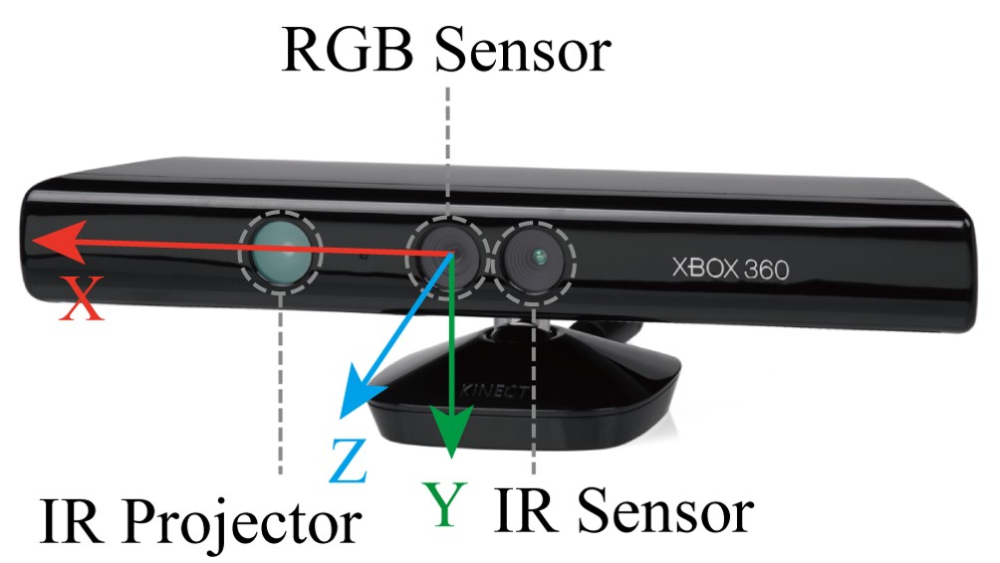

Multi-Camera Vision System
In this project, I designed and implemented a multi-camera vision system to get complete and unbiased stereo vison information of different types of objects. This project is published on
Zekun Zhang, Bing Tang, Xiaoping Chen, Object manipulation system with multiple stereo cameras for logistics applications, Journal of Computer Applications, 2018, Vol. 38(8): 2442-2448[PDF(Chinese with English abstract)]
It is also a part of my master thesis [PDF(Chinese)]. This system is meant to overcome the limitation that one single stereo camera can only observe one aspect of the scene at one time, while feature-based reconstruction methods can be complicated and computation-consuming.
Vision System
The basic idea is to calibrate several stereo cameras (Microsoft Kinect, Microsoft Kinect v2, Intel RealSense, etc) to the same coordinate system using a 2D barcode array. When these cameras work simultaneously, the vision system will be able to reconstruct the integrated 3D model of the given object without any matching, as long as the relative position of the cameras remains unchanged. The camera drivers and point cloud processing utilities are provided by ROS and PCL.

Microsoft Kinect Camera
ALVAR is used to calibrate the cameras. Several different barcode tags are printed on a board to form an array. The coordinates of these tags are given to the vision system as the ground truth. Then each camera will detect the positions of the tags in its own "camera coordinate system". By optimizing the total error, a transformation between camera coordinate system and the tag-defined coordinate system can be established. After calibrating every camera, the system can combine transformed point clouds to a joined point cloud that represents one object.
Calibration Process
The joined point cloud of the given object first needs to be resampled to be even-distributed. This ensures that the features to be calculated later is unbiased. First the centroid of the object can be determined by simply calculating the mean of all the point in the point cloud, if the density of the object is assumed to be evenly distributed (which also implies that there is no unseen hole inside the object). Then the principle components, or the main orientations of the object can be calculated by PCA. These three vectors are orthogonal, and define a coordinate system which represents the mass distribution of the object. The "natural" size of the object can be calculated in this coordinate system. Also we can use RANSAC to extract planes or other shapes from the point cloud.
Result of Feature Extraction
The orientations, sizes, and surface planes calculated from the joined point cloud can be used to perform accurate and intelligent interaction with the object. The video below shows how a robotic arm picks objects using the orientation and size information. The arm also touchs the center of the largest plane in one object from the normal direction. The arm is the MICO2 manufactured by Kinova Robotics. The position and orientation of the arm need to be calibrated with the barcode array coordinate system.
Arm Operating Different Object